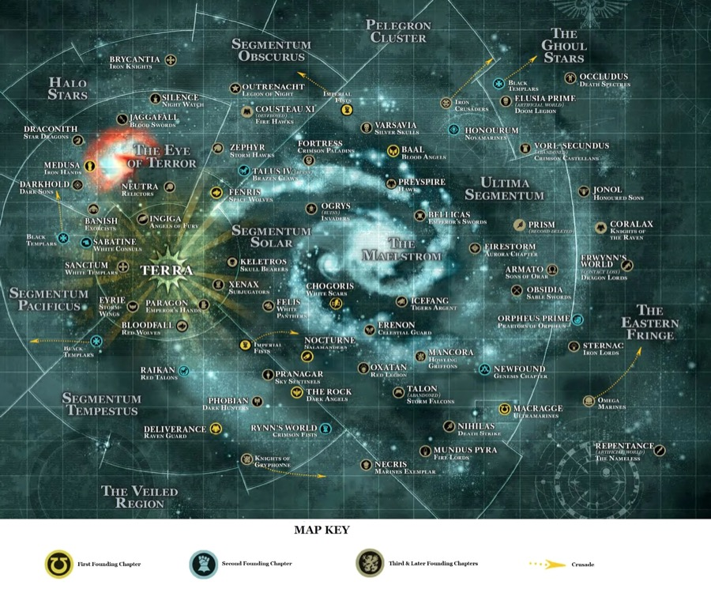

Homeworld
| Space Marine Chapter homeworld | |
|---|---|
| Also called a Chapter planet | |
 Chart of the Departmento Cartographicae showing the known Chapter homeworlds, c. 999.M41, before the Great Rift Artwork © Games Workshop | |
| Holds | The Fortress-monastery of a Space Marine Chapter |
| Ruled by | The Chapter Master, as a feudal possession of the Imperium of Mankind; often also planetary governor and Imperial Commander |
| Kinds of rule | Direct rule, stewardship, distant rule |
| Typical worlds | Death worlds, Feral worlds, Feudal worlds; also Hive worlds, Civilised worlds and uninhabited worlds |
| Not a planet | Orbital stations, moons, asteroids and voidcraft; Fleet-based Chapters have none |
| Only greater loyalty to | Terra and the Emperor of Mankind |
| Examples | Macragge, Fenris, Baal, Nocturne, Chogoris, Medusa, Rynn's World, Caliban (destroyed) |
A Space Marine Chapter homeworld, also called a Chapter planet, is the Imperial planetary classification for a world that serves as the base of a Space Marine Chapter's Fortress-monastery. For some Chapters it is also the only recruiting ground, while others draw their aspirants from several planets. The Chapter holds the world as a feudal possession of the Imperium of Mankind. Only Terra is of greater importance to a Chapter, and only to the Emperor of Mankind do the people of a Chapter planet owe greater loyalty.[1][2]
Not every homeworld is a planet. Some are orbiting voidcraft, space stations, deserted moons or asteroids, and the Fleet-based Chapters, who keep no world at all, recruit from any promising planet that they pass in the course of their duties. Where the homeworld is a planet it is very often a Death world, a Feral world or a Feudal world, whose hardy and warlike peoples are the best raw material for the Adeptus Astartes. The master of the Chapter is often also the traditional feudal ruler, so that the Chapter Master holds the rank of planetary governor as well.[1][3]
The ties between a Chapter and its world are deep. The culture of many Chapters is bound to their homeworld: the Salamanders embrace the way of the smith and the forge, as the people of Nocturne work the metals of their world, and the feasting halls of the Space Wolves mirror those of the tribes of Fenris from which they recruit. In the Era Indomitus many homeworlds have taken in refugees from the wars of the Imperium, and many Chapters, especially in the Imperium Nihilus, now hold sway over their neighbours as well as their own people.[3][4]
Status and government
[edit]A Chapter that has a homeworld is its absolute master, with total control over the world and every people living on it. The Chapter Master holds the same legal powers and the same place among the nobility of the Imperium as a planetary governor, and in practice has greater power, for the military force that he commands is far greater. Most Chapters take little part in the politics and economy of their world, though some involve themselves to different degrees. The arrangements fall into three kinds: direct rule, stewardship and distant rule.[1][3]
Under direct rule the Chapter governs the world directly, and its leaders are the ultimate authority for its peoples. Even then the Chapter seldom concerns itself with the practical details of administration, which are left to Chapter serfs or to leaders chosen from the population. The advantage is that the Chapter can enforce its will on its subjects and shape their development to produce promising aspirants, and in war it can take direct control of the world's defence forces, sometimes placing its officers as generals in the armies of mortals. Under stewardship the Chapter leaves the administration to a ruling class drawn from the population, issuing broad directives and keeping its distance. The Space Marines are figureheads, and may attend the great festivals, though the people see them rarely. If the world is invaded the Chapter may revert to direct rule for the duration of the emergency.[1][3]
Under distant rule a Chapter claims a world and takes no hand in its affairs. Many prefer to keep their recruiting stock "pure", fixed in the state that makes them such good aspirants. If the people know of the Space Marines at all they are distant, semi-mythical figures whose appearance is a portent of great things. In the event of an enemy threatening the world, the Space Marines take up the defence but have little to do with the population.[1]
Kinds of homeworld
[edit]Most Chapters keep their fortress-monastery on the world that supplies their recruits, but not all do. The Space Wolves recruit only from the barbarian tribes of Fenris, where their fortress-monastery, The Fang, also stands. The Crimson Fists hold their fortress on the civilised world of Rynn's World, and recruit from other planets of the region.[3][5]
Hive worlds
[edit]On a Hive world the people live in vast hive cities, and the lawless gangs of the undercities are a source of aspirants, often taken by force. A Chapter on such a world usually keeps its fortress apart from the great bulk of the population, either in the highest spires of a hive or in an isolated region of the polluted wastes. It has access to an almost unending supply of munitions, and the master of each city is commonly bound by ancient law to give the Chapter a tithe of its industrial output in return for the Chapter's protection.[2][3]
Feral worlds and Feudal worlds
[edit]A Feral world is a planet colonised long before the Age of the Imperium that has fallen into barbarism, rarely rising above the Iron Age in its technology, and the Imperium has no reason to spend its effort on civilising it. Its people are among the toughest recruits to be found, and many Chapters make their home on such worlds. The fortress is commonly placed on a distant island or high on a mountain range. The Blood Angels' fortress, the Arx Angelicum, stands on the less populated world of Baal, though most of the Chapter's recruits come from the moons of Baal, and the Mortifactors keep a starfort in orbit above their homeworld. A Feudal world is one where the people have risen above the tribe, or fallen from a higher state, into kingdoms and vassalage, and a Chapter may keep its distance as on a feral world or become an overlord or a secret warrior order. Its fortress is commonly the subject of legend.[3][2]
Death worlds
[edit]A Death world is a planet so hostile to Humanity that it would not be settled at all without some resource that the Imperium needs. Its people live in daily and hourly danger, and the mere fact that a native has survived to adolescence marks him as among the toughest humans there are. Chapters that call such a world home are experts in the terrain of their world and fight the world itself every day. Some place their fortress in orbit, and others choose the worst of the environment, where they sharpen their skills still further.[3]
Civilised worlds and uninhabited worlds
[edit]A Civilised world is usually a poor recruiting ground, since people there seldom face the dangers that make a warrior. Only worlds that keep a strong military tradition interest the Chapters. The Realm of Ultramar, where every family hopes that a son will be accepted by the Ultramarines, is the clearest example, and on some worlds the Chapter forms the highest tier of a regimented warrior society. Other Chapters prefer secrecy and make their base on a barren or uninhabited world, recruiting from nearby feral tribes and hive gangs. Mixing different sources in one intake brings problems, but it produces a wide range of skills.[3][1]
Fleet-based Chapters
[edit]The Fleet-based Chapters live aboard great voidships. These are often unique vessels from before the Age of the Imperium, or, in the case of the Dark Angels, The Rock, a mass of planetary debris hollowed out and fitted with the largest Warp drives. Many travel in vast circuits that take centuries to cross a Segmentum, and recruit from many planets. Some hold exclusive recruiting rights on certain worlds, whose people may know nothing of the arrangement, and a few set up small stations to watch a world and test its aspirants, as the Black Templars do. Chapters guilty of crimes against the Emperor but judged redeemable by the Inquisition and the High Lords of Terra, such as the Mantis Warriors and the Executioners, have been made to give up their homeworlds, which forces them to become fleet-based.[3][6]
Recruitment and culture
[edit]Many Chapters take aspirants from more than one world, whether because their losses are heavy and their homeworld's gene-stock is thin, or from choice. The Imperial Fists, Black Templars and Blood Ravens are among them. Some demand aspirants from any world they have saved from invasion, and others hold ancient claims on neighbouring worlds. Chapters that do so heavily indoctrinate the outsiders, so that they soon cannot be told from natives of the homeworld in outlook and custom. Fleet-based Chapters are the least likely to take on the ways of those they recruit from: one Chapter Master of the Dark Angels was born among the head-hunting savages of the feral world of Kimmeria, yet is counted among the most noble and charismatic of the Chapter's leaders.[1][3]
Origins of the Chapter's rule
[edit]How a Chapter came to hold its world differs as much as the Chapters do. For most of the First Founding Chapters the homeworld is the world of their primarch, and for some of the later Foundings it is a world their primarch seized in the Great Crusade. Others freed their planets from tyrants or took them from heretics or xenos, and others were given them in gratitude for heroic deeds. A great many Chapters cannot say how they came by their world, because the records were lost, forgotten, destroyed or hidden. All they know is that the world and the fortress-monastery upon it are their realm and their bastion, and that they will defend it to the death.[1][3]
Notable homeworlds
[edit]| World | Chapter | Kind and notes |
|---|---|---|
| Macragge | Ultramarines | Principal world of Ultramar |
| Fenris | Space Wolves | Death world of barbarian tribes; fortress-monastery The Fang |
| Baal | Blood Angels | Fortress-monastery Arx Angelicum; about 122,000 on the world; recruits from its moons |
| Nocturne | Salamanders | Volcanic world of smiths and forges |
| Chogoris | White Scars | First Founding Legion world |
| Medusa | Iron Hands | Charted close to the Eye of Terror |
| Rynn's World | Crimson Fists | Civilised world; recruits from other planets |
| Caliban | Dark Angels | Destroyed; the Chapter is now fleet-based aboard The Rock |
| Chemos, Colchis, Barbarus, Cthonia | Traitor Legions | Destroyed or abandoned; the old homeworlds of the Emperor's Children, Word Bearers, Death Guard and Sons of Horus |
Timeline
[edit]| Date | Event |
|---|---|
| M30 | The primarchs find or take the worlds that later become the homeworlds of the First Founding Chapters in the Great Crusade[a] |
| 005–014.M31 | The Horus Heresy destroys or abandons many Legion homeworlds |
| c. M31 | The Second Founding divides the Legions into Chapters, many of which take new bases[b] |
| M32–M40 | Later Foundings settle Chapters on worlds liberated, seized or granted[c] |
| 901–913.M41 | The Badab War: rebel Chapters lose their worlds, and some forfeit them in punishment |
| c. 999.M41 | The Departmento Cartographicae charts the known Chapter homeworlds before the Great Rift |
| 999.M41 | The Great Rift opens; homeworlds in the Imperium Nihilus are cut off |
| Early M42 | Homeworlds take in refugees; Chapters such as the White Templars defend their worlds against Tyranids in the Fourth Tyrannic War |
See also
[edit]
Notes
[edit]References
[edit]- ^ a b c d e f g h Codex Adeptus Astartes - Space Marines (8th edition). Games Workshop. pp. 16-17.
- ^ a b c Codex: Space Marines (5th edition). Games Workshop. pp. 30-31.
- ^ a b c d e f g h i j k l Codex: Space Marines (9th edition). Games Workshop. pp. 12-13.
- ^ Haley, Guy. Dark Imperium (novel). Black Library.
- ^ Parker, Steve. Rynn's World (novel). Black Library.
- ^ Imperial Armour Volume Nine - The Badab War, Part One. Forge World. pp. 7, 24, 40-41.